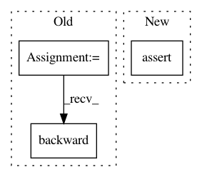

455a0dc9a98212089a7201a025670c33a1770f67,torch_geometric/nn/functional/spline_gcn_test.py,SplineGcnTest,test_backward,#SplineGcnTest#,92
Before Change
vertices = [[0, 0], [1, 1], [-2, 2], [-3, -3], [4, -4]]
edges = [[0, 0, 0, 0], [1, 2, 3, 4]]
adj = mesh_adj(torch.FloatTensor(vertices), torch.LongTensor(edges))
features = torch.FloatTensor([[1, 2], [3, 4], [5, 6], [7, 8], [9, 10]])
weight = torch.arange(0.5, 0.5 * 25, step=0.5).view(12, 2, 1)
features_in = Variable(features, requires_grad=True)
weight = Variable(weight, requires_grad=True)
features_out = spline_gcn(
adj,
features_in,
weight,
kernel_size=[3, 4],
max_radius=sqrt(16 + 16),
degree=1)
features_out.mean().backward()
print(features_in.grad.size())
print(weight.grad.size())
After Change
degree=1)
test = gradcheck(op, (features, weight), eps=1e-6, atol=1e-4)
self.assertTrue(test)
In pattern: SUPERPATTERN
Frequency: 4
Non-data size: 3
Instances
Project Name: rusty1s/pytorch_geometric
Commit Name: 455a0dc9a98212089a7201a025670c33a1770f67
Time: 2017-10-23
Author: matthias.fey@tu-dortmund.de
File Name: torch_geometric/nn/functional/spline_gcn_test.py
Class Name: SplineGcnTest
Method Name: test_backward
Project Name: apache/incubator-mxnet
Commit Name: 95f5cc60904a2d88d4861fff0f6dbad15f8cdbe3
Time: 2020-10-06
Author: zhaoqizhu96@gmail.com
File Name: tests/nightly/test_np_large_array.py
Class Name:
Method Name: test_amin
Project Name: apache/incubator-mxnet
Commit Name: 95f5cc60904a2d88d4861fff0f6dbad15f8cdbe3
Time: 2020-10-06
Author: zhaoqizhu96@gmail.com
File Name: tests/nightly/test_np_large_array.py
Class Name:
Method Name: test_amax
Project Name: apache/incubator-mxnet
Commit Name: 95f5cc60904a2d88d4861fff0f6dbad15f8cdbe3
Time: 2020-10-06
Author: zhaoqizhu96@gmail.com
File Name: tests/nightly/test_np_large_array.py
Class Name:
Method Name: test_abs